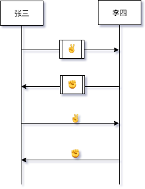
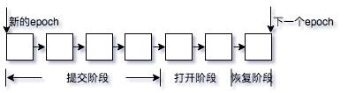

ADA币冲提接入教程 2018-05-30
Cardano 1.2 版本支持了新的 钱包API 。新的API设计很简洁，交易所或者其他应用想接入ADA币的冲提变得非常方便。
本教程教你如何从零开始实现ADA币的冲提功能。
编译运行Cardano钱包后端
Windows和Mac系统，直接使用官方发布的钱包安装包即可。
Linux系统需要自己编译，编译过程如下：
安装nix ，在非root账户下运行:
$ curl https://nixos.org/nix/install | sh
运行后会自动配置当前环境，重新登录当前终端即可生效。
配置IOHK的Binary Cache：
$ sudo mkdir -p /etc/nix
$ sudo vi /etc/nix/nix.conf # ..or any other editor, if you prefer
添加：
binary-caches = https://cache.nixos.org https://hydra.iohk.io
binary-cache-public-keys = hydra.iohk.io:f/Ea+s+dFdN+3Y/G+FDgSq+a5NEWhJGzdjvKNGv0/EQ=
取cardano源代码：
$ git clone https://github.com/input-output-hk/cardano-sl.git
$ cd cardano-sl
$ git checkout -b release/1.2.0 origin/release/1.2.0
编译：
$ nix-env -A cardano-sl-wallet-new --install --file .
因为有Binary Cache，应该很快，成功后在目录 ~/.nix-profile/bin/ 中会多一个 cardano-node 的可执行文件，这个目录在安装nix的时候已经加入到 PATH 了。
另外整一个运行的目录，把相关配置拷贝过来：
$ mkdir ~/cardano-wallet
$ cd ~/cardano-wallet
$ mkdir lib
$ cp /path/to/cardano-sl/lib/{configuration.yaml,mainnet-genesis.json} lib
$ mkdir scripts
$ cp -r /path/to/cardano-sl/scripts/tls-files scripts/
创建文件 wallet-topology.yaml ，内容如下：
wallet:
fallbacks: 7
valency: 1
relays:
- - host: relays.cardano-mainnet.iohk.io
运行:
$ cardano-node --topology wallet-topology.yaml --configuration-key mainnet_wallet_linux64
验证钱包V1 API工作正常：
$ curl --cacert scripts/tls-files/ca.crt https://localhost:8090/api/v1/node-info
{"data":{"syncProgress":{"quantity":92,"unit":"percent"},"blockchainHeight":{"quantity":1072633,"unit":"blocks"},"localBlockchainHeight":{"quantity":996101,"unit":"blocks"},"localTimeInformation":{"differenceFromNtpServer":{"quantity":-147487,"unit":"microseconds"}}},"status":"success","meta":{"pagination":{"totalPages":1,"page":1,"perPage":1,"totalEntries":1}}}
Ouroboros Praos 2018-05-27
Ouroboros Praos 是IOHK发布的Ouroboros协议第二个版本。
注解
- 第三个版本Genesis(已发布) 解决了PoS协议的Long Range Attack问题。
- 第四个版本Hydra(未发布) 将会解决分片问题。
在 区块链中的随机数
一文中，我们介绍了第一个版本的Ouroboros PoS协议。我们看到随机数在slot leader选择中的重要作用，以及使用MPC生成安全可验证的随机数的方法。
但是原始 Ouroboros 协议存在这样一些问题：
- 伪随机函数是公开的，也就是在epoch开始的时候，实际上恶意节点已经可以知道整个epoch中所有slot leader是谁了。恶意节点从而可以利用这一点进行攻击，比如贿赂和针对性的DDoS攻击。
- MPC的性能是随着参与节点数量增加而降低的。
- 安全性论证基于对同步网络模型的假设。
所以slot需要一定时长(20秒)确保诚实节点之间的同步。Praos的主要改进是采用可验证随机函数(VRF)代替公开伪随机函数进行slot leader选择。
可验证随机函数(VRF)
可验证随机函数是一个密码学的工具，一种伪随机函数，可以使用私钥参与随机数的计算，同时别人可以使用公钥对计算结果进行验证。
-- 计算随机数
vrf :: PrivateKey -> Seed -> (a, VrfProof)
-- 验证随机数
verifyVrf :: PublicKey -> Seed -> (a, VrfProof) -> Bool
-- 区分不同slot
slotSeed :: SlotIndex -> EpochSeed -> Seed
使用这个工具，每个节点可以使用不同的伪随机函数判定自己是否是slot leader，具体方法是判定产生的随机数是否低于一个阀值，该阀值的值和节点stake比例相关。
如果是leader则直接出块，并在块中包含验证需要的proof信息。其他节点直到收到区块，才知道谁是slot leader。
因为每个节点随机函数是独立的，所以并不能像原始Ouroboros那样保证每个slot都刚好有且只有一个leader，可能没有人选中，也可能选中多个。不过praos新的安全性论证，已经考虑进这些情况，并且建立在半同步网络模型上，依然可以保证原来的安全属性。意味着praos的slot时长可以大大降低，也意味着这个版本性能将大大提升。
最后每个区块出块者会额外生成一个随机数放在区块中，用于产生下一个epoch的seed。
Key Evolving Signature Schemes
Praos引入KES解决另一个PoS的问题，就是恶意用户如果盗用了stake holder的私钥的情况，可以对它任意时刻出的块重新签名。
KES模式下，每次签名后都产生新的key，并抛弃旧的key。这样就算被黑掉当前的key，也无法伪造过去产生的区块签名。
区块链和P2P网络 2018-03-14
其实在互联网刚萌芽的时候，网络就是p2p状态的，每一台机器都有一个固定的地址，互相之间可以访问。
但是随着互联网发展，一方面ipv4设计上的不周全导致地址不够用，普通人的电脑慢慢的就不能简单地直接被人访问了。
另一方面互联网业务本身也走向了客户端-服务器模式，并且客户端越来越轻，客户端软件逐渐被web技术取代，相对应的服务器越来越重要。
但在这个发展过程中，还是出现过一个惊艳的技术潮流，就是以BT下载为代表的P2P文件分享。
普通互联网用户不通过服务器，也可以直接建立网络结构，完成文件分享和下载的任务。
但是由于版权等问题，这个技术没有成为主流。
区块链技术从某种意义上，可以看做是P2P技术的一次重生。这一次，它实现了数字货币的功能，顺便解决了做种的人(现在叫矿工了)的激励问题。
同时，因为有了经济上的激励，它同时还要从根本上解决作弊的问题。
我们介绍一下区块链技术最底层的部分：P2P网络协议。
P2P网络协议有很多种，传统BT下载类应用常用分布式哈希表(DHT)算法，具体的就是Kademlia算法。
区块链应用中，比特币使用的是gossip protocol, 以太坊和Cardano(ADA)使用的是Kademlia DHT。
gossip protocol是一种非结构化的p2p网络，基本上是随机连上一些节点就可以了，网络拓扑会呈现更随机的形状，
比特币的参数是每个节点最多主动连8个节点，最多接受117个外来连接。
Kademlia DHT是一种结构化的p2p网络，这也是根据文件分享应用的需求来的。
完美的网络结构当然是最好按照物理距离来，每个节点连接和它物理距离最近的节点。
但是使用物理距离比较困难，Kademlia算法使用节点id之间的异或操作来当作节点之间的距离。
因为异或操作拥有的一些性质使得它适合来做这件事情：
- 交换律，路由表对称。
- 三角关系：d(x, y) + d(y, z) >= d(x, z)
Kademlia网络中查找节点内容的通讯复杂度是对数级别，路由表缓存效率更高，网络扩展性更好。
但是目前阶段的区块链应用基本上只需要广播，而不需要查找特定节点，其实用不上Kademlia的一些特性；
反而不小心的话，Kademlia网络的结构化特征给Eclipse Attack带来了便利，所以比特币的选择也有他的道理。
Eclipse Attack
Eclipse Attack是指恶意节点通过某种手段“包围”了目标节点，使得目标节点所有连接的都是恶意节点，之后恶意节点可以过滤或伪造消息，进一步对目标节点发起各种攻击，比如：
2015年就有研究人员研究过对比特币网络进行Eclipse Attack的研究(Eclipse Attacks on Bitcoin’s Peer-to-Peer Network)，
比特币经过改进，现在已经不是一般的攻击者能够实现的了。
2018年初又有研究人员发表了针对以太坊网络的Eclipse Attack研究(Low-Resource Eclipse Attacks on Ethereum’s Peer-to-Peer Network)，发现攻击成本非常低，
两台普通机器连上以太坊就能成功发起攻击，当然以太坊后续版本已经加上了反制措施。
我们可以了解一下大概的攻击方法：
连接垄断
以太坊设定的每个节点维持最多13个连接，并且外部发起的和自己发起的连接是平等的。
攻击者可以等待目标节点重启（或者给目标节点发送"重启包"强制重启），然后主动连上去，占满目标节点的可用连接。
解决方案：要求节点至少要有一部分主动对外的连接。
占有路由表
因为以太坊节点ID就是一个ECDSA公钥，而公钥生成成本很低，并且同一台电脑上就可以运行大量节点。
攻击者可以根据目标节点ID生成大量和目标节点ID距离很近的节点，并主动ping目标节点。
当目标节点重启后，路由表清空，会迅速被恶意节点占领。
当目标节点主动发起连接，依然会大概率连上恶意节点。
解决方案：
- 因为这个攻击方式利用了Kademlia距离函数是公开并且对称的特点，如果我们把距离函数改成非对称的，
引入本地生成的随机数： dist(s1, SHA3(n, s2)) ，这样攻击节点就无法批量生成和目标节点距离短的节点ID了。
目前以太坊没有实现这个策略，因为它其实破坏了Kademlia网络的结构，会提高查找特定节点的通讯复杂度，虽然区块链应用场景下目前并不需要这种操作。
- 目前以太坊的反制措施是限制路由表中来自同一个网段中节点数量，让这种攻击方式的成本提高一些。
区块链中的随机数 2018-03-08
随机数对于区块链技术来说很关键。
本质上，分布式账本的核心问题就是随机选择出块人的问题，这个随机性要能被全网确认，并且不能被操控，也不能被预测，
否则恶意节点通过操控这个随机数就可以操控长链，从而实现双花攻击。
PoW的方案是让大家进行算力竞赛，设置一个计算哈希的难题，谁先算出来谁赢，算力高的赢的概率高，算力低的赢的概率低。投入的算力能够提现在哈希值上，
这样全网能够验证，并选择包含最多算力的那条链。恶意节点只能通过提升自己的算力来增加攻击成功的概率。
PoS的方案是选举，大家不用浪费电力去进行算力竞赛，而是文明一点，随机选举一个节点来出块，并且被选中的概率和它拥有的份额相关。
如果“随机”这一步没有问题的话，恶意节点只能通过增加自己的份额，增加自己被选中的概率，从而增加双花攻击的成功概率。
这里有一点比PoW的方案要好就是，要实现攻击，先得成为持币大户，如果攻击成功币价大跌，攻击者也会承受最大的损失。
而PoW方案中虽然算力要花钱，但是如果攻击者没有持币，那么他的利益和币价不一定是正相关的，不能排除仍然存在攻击的动力。
那么接下来的核心问题就是，这个不能被操控不能被预测的随机数从哪来。
传统地PoS方案尝试从链上现有的数据入手，比如使用上一个区块的哈希值，上一个区块的时间戳等等来作为随机数的来源，但这些会带来额外的安全风险。
因为区块本身的信息就是节点写进去的，然后又要根据里面的信息来选举后续的出块者，存在循环论证的嫌疑，安全性不会太好。
这也是传统地认为PoS方案不如PoW可靠的部分原因。
Cardano项目采用的Ouroboros协议是被密码学界证明安全的一个PoS协议，也是唯一一个被工业界采用的可证明安全性的PoS协议。
它采用密码学的手段来生成这个随机数。为了弄清楚这个过程，我们先从更基础的密码学工具开始：
承诺(Commitment)和打开(Open)
假设张三李四要玩剪刀石头布，用传统方式作弊者如果稍微出的晚一点，可以等看到对方的手势后再做选择。
为了防止这种情况，他们：
- 先各自做出选择，然后把自己的选择做个哈希；
- 交换这个哈希；
- 等双方都收到对方的哈希后，再交换双方的选择；
- 验证对方的选择和之前的哈希一致。
这样双方都知道了对方的选择，也能确认对方的选择是提前就做好的。
这个哈希值就叫做承诺，因为它里面包含了保密信息，但又没有泄漏保密信息，而最终发送对应的保密信息，就叫做打开承诺。

承诺和打开是一种模式，哈希只是实现手段之一。
简单随机数协议（Coin-Tossing）
现在我们可以设计一个多方生成随机数的协议：
- 每个节点在本地产生一个随机数，并把它的承诺广播给其他人
- 当它收到所有人广播的承诺后，再把打开也广播给其他人。
- 最后大家把得到的随机数异或到一起，因为异或操作满足交换律和结合律，所以操作顺序不影响结果。
最终大家都得到了一个一致的无法被操纵的随机数。
但这个简单协议的问题在于，恶意节点可以选择终止协议，也就是不发送自己的打开，会使得其他人无法进行下去。要解决这个问题，我们还需要另一个工具。
可验证秘密共享（Verifiable Secret Sharing）
秘密共享是说，一个人可以把一个需要保密的信息，拆分成n份，分别发送给n个人，只要恶意节点不超过一定数量，最终大家可以综合各自的信息片段把原始信息还原出来。
并且就算分发者如果作弊，大家也可以检查出来。具体的实现方式也有多种，这里就不深入了。
有了这个工具，就算恶意节点不发送打开，我们也能根据拆分信息还原出他的随机数，如果他想在拆分信息上作弊，大家也能检查出来并把他踢掉。
结合这几个技术，我们就可以有一个完整的随机数生成协议了。最后，因为我们本来就是个区块链，所以协议过程中需要广播的信息，我们可以直接写到链上去，
这样可以简化实现，并且也不需要所有投票节点同时在线，并且如果有人作弊，作弊的记录将会永远保存在链上。
最后综合一下整个协议流程：
在提交阶段，每个节点本地生成随机数和对应的承诺，同时把随机数拆成n份匹配其他的投票节点，
并且用相应投票节点的公钥对每一份信息进行加密，保证它只能被对应的节点解密，
然后把承诺和加密后的拆分信息一起广播给区块链。
当大家收到大部分节点的承诺和拆分信息后，就进入打开阶段，每个节点把自己的打开发到链上。
然后是恢复阶段，每个节点检查是否有节点发送了承诺但没有发送打开，
如果有，则解密自己对应的那份拆分信息并发布，然后根据大家发布的拆分信息恢复出该节点的随机数。
现在大家就有了所有节点的随机数，把它们异或到一起，最终得到了一个一致的随机数，并用它来选择下一轮的出块人。

最后，这个随机数不光可以用来选择出块人，也可以给智能合约用，这是PoS另一个好处；
而PoW体系虽然出块人是随机的，但并没有产生一个具体的随机数，所以智能合约要用随机数，还是得从区块链本身的数据里面去获取了。
以后会继续介绍Ouroboros协议其他方面的细节。
区块链与函数式编程 2018-03-06
区块链是对软件正确性要求极高的领域。过去软件bug和安全漏洞带来的损失，一般就是停机维护一下，被拖个库就算是很重大的后果了。而区块链软件的漏洞被利用，那将是灾难性的，因为上面跑的都是真金白银。随着区块链技术对传统经济领域渗透的加深，这种风险将会大大提升。
传统软件工程只重视产品的快速迭代快速上线，从来没有把软件的正确性摆在一个优先级很高的位置，究其根本还是传统领域软件出bug带来的成本不高。
行业里其实已经有一些关键领域是对软件的正确性要求极高的，比如航天系统，金融领域一些核心系统等。1962年软件bug造成火箭偏航，损失1850万美元；1978年CAD软件bug造成体育竞技场倒塌，损失上亿美元；1985年放射机软件bug导致病人受到大量辐射，1987年金融交易软件bug导致美国股灾，等等。
这些问题促使人们去思考如何保证软件正确性，而这些年来业界针对这种对软件正确性要求高的领域，也确实发展了一套技术手段来支持，形式验证、类型系统、纯函数式编程等。这些方法对程序员要求更高，开发时间更长，所以在大部分编程领域，这种方法显得不那么经济。大部分程序员其实并不了解这个领域的技术。而现在传统程序员开始进入区块链软件的开发，如果不能在思维、流程、工具各方面作出相应调整的话，是很危险的事情。
真正的形式验证成本巨大，只好用来解决一些最核心的问题。而另一种同时兼顾实用性的方案是函数式编程（函数式编程这个词语这些年有些定义模糊，这里特指静态类型纯函数式语言，基本上就是ML一族的语言），而Haskell是其中的佼佼者，也是Cardano项目使用的开发语言。
Haskell是一门 纯函数式 静态类型 惰性求值的语言，这里关键字有几个：
纯函数式是说，函数除了将输入转换为输出以外，不能有其他副作用（比如执行IO操作、修改全局变量、或者发射个导弹啥的），并且对于相同的输入永远返回相同的输出。这意味着没有变量的概念，数据结构也都是immutable的。显然这样的函数会有很多良好的性质：好测试, 线程安全, 代码可重用, 可读性强等等。另外这样的代码还有一个性质是可证明，因为你可以机械地把函数的调用替代成函数的实现，而不改变其语意，所以你可以形式地证明比如说两个函数等价。还有一些其他的好处，比如一些代码重构工具能够自动调整代码，编译器也可以更激进地对代码进行优化，因为他们能够确保对程序的语意没有影响。
如果在*纯*的基础上，再加上total的约束，那就更好了，total是说函数对参数的所有取值都有定义，相对应的partial的函数可能对某些输入没有定义。
不过有点遗憾的是，函数是否total无法静态地检测出来，因为从程序语意的角度，未定义和死循环是一样的，所以检测total性和停机问题是一样的。
（但是如果我们愿意牺牲图灵完备性的话，是可以支持total检查的，这样的语言里可以没有死循环和partial函数，
智能合约语言就非常需要这样的设计，而Cardano的智能合约语言 Plutus 正是这么设计的）
静态类型系统，按照“柯里-霍华德同构”定理，类型对应于命题，而程序对应于证明。当我们把问题的模型编码成类型后，编译器通过类型检查可以保证程序的正确性。在实践中，类型是可以逐步细化的，越细化，能够通过编译的实现就越少，甚至可能细化到只剩下一个有意义的实现，这种情况下甚至可以通过工具自动生成实现代码。类型系统还带来其他一些便利的工具，比如hoogle，可以根据类型签名搜索现有库提供的函数实现。
关于Haskell语言其实可以说的还有很多，未来会继续写一些具体的编程模式，尤其是与区块链相关的，以及它在Cardano项目中的具体实践，敬请期待。